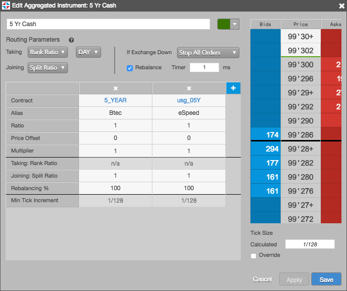
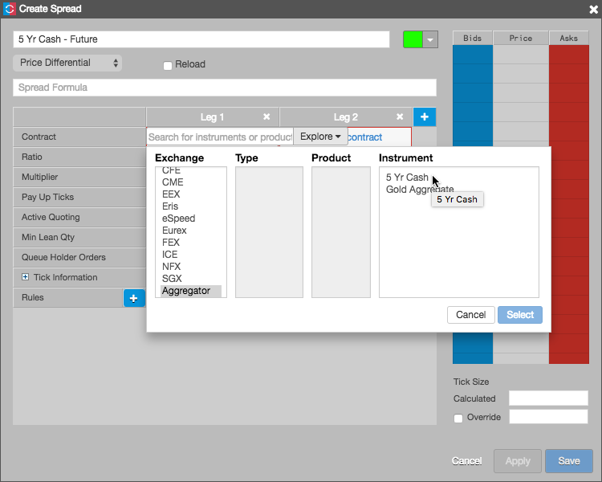
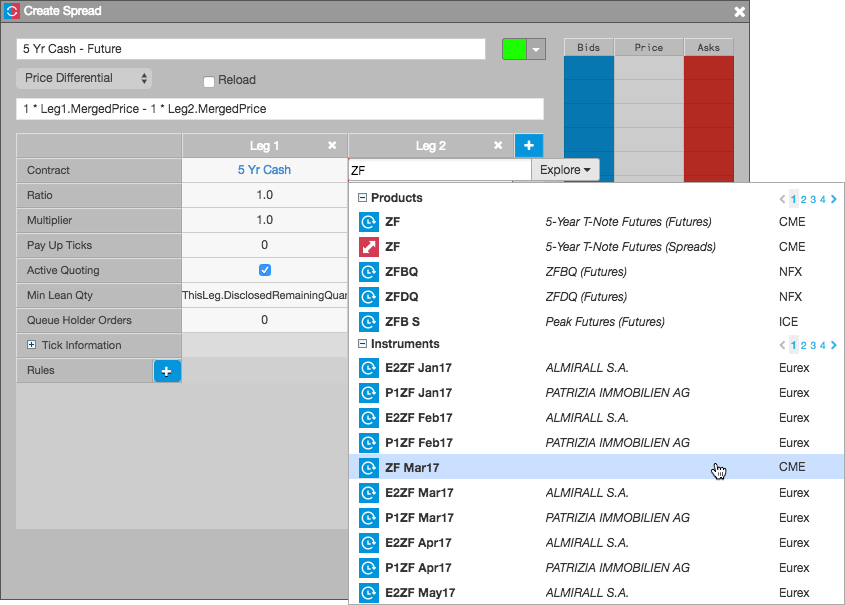
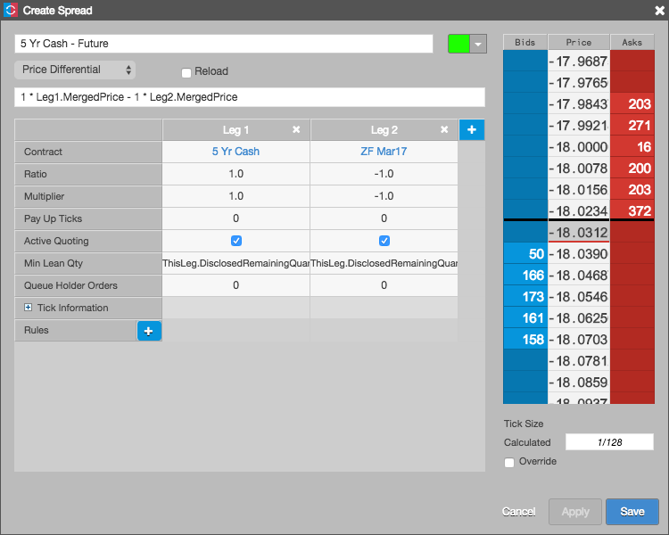

Using Autospreader, you can create a synthetic spread using an Aggregator instrument as one of the spread legs. For example, you can create a Basis Spread using an aggregated cash instrument as the front leg and a treasury futures instrument as the back leg.
Before you begin, create and launch the aggregated instrument or ensure that the instrument is available in the market. The following example shows the configuration for an aggregated instrument comprising the contracts for BrokerTec 5-year bonds (5_YEAR) and eSpeed 5-year bonds (usg_05y). When launched in Aggregator, the aggregated instrument (e.g., 5 Yr Cash) appears in Market Explorer and product search results and is available to trade.

To create spreads with aggregated instruments:
Click Create in the opened Autospreader widget and configure the synthetic spread definition parameters.
For Leg 1 of the spread, click Select a Contract and select the aggregated instrument (e.g., 5 Yr Cash).

Autospreader handles the aggregated instrument as if it were a native exchange instrument.
For Leg 2 of the spread, click Select a Contract and select the futures instrument (e.g., ZF Mar17).

Preview the spread price, adjust the ticking if needed, and click Save.
